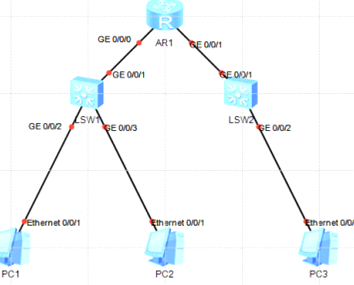

DHCP配置
基于接口地址池的DHCP
基于全局地址池的DHCP

配置基于接口地址池的DHCP
配置基本地址
基于接口配置DHCP server
在r1上开启DHCP功能
[r1]dhcp enable
接口地址池可动态分配IP地址范围就是接口地址所在网段,且只在此接口下有有效,
配置如下
interface GigabitEthernet0/0/0
ip address 192.168.1.1 255.255.255.0
# 在r1的接口上配置dhcp select interface,开启DHCP服务,指定从接口地址池分配地址
dhcp select interface
# 设置不参与自动分配的IP的地址,默认该地址池所有地址参与自动分配,
dhcp server excluded-ip-address 192.168.1.2 192.168.1.50
dhcp server excluded-ip-address 192.168.1.201 192.168.1.254
#
在r1的g0/0/0上配置dhcp服务器接口地址池租期为2天,不修改默认为1天,超过租期会重新分配
dhcp server lease day 2 hour 0 minute 0
# 配置自动分配DNS服务器地址
dhcp server dns-list 8.8.8.8
查看状态
[r1]dis ip pool # 当前有两个接口开启DHCP地址池
Pool-name : GigabitEthernet0/0/0
Pool-No : 0
Position : Interface Status : Unlocked
Gateway-0 : 192.168.1.1
Mask : 255.255.255.0
VPN instance : --
Pool-name : GigabitEthernet0/0/1
Pool-No : 1
Position : Interface Status : Unlocked
Gateway-0 : 192.168.2.1
Mask : 255.255.255.0
VPN instance : --
IP address Statistic
Total :506
Used :3 Idle :400 # 已经使用3个,空闲400
Expired :0 Conflict :0 Disable :103 # 不参与分配103个
基于全局地址池的dhcp
若地址池绑定在特定的接口上,可以限制用户的使用条件,因此保障安全的同时存在局限性,所以就有一个基于全局地址池的DHCP,配置全局地址池dhcp服务器,所有接口上的用户都可以选择该地址池中的地址,
路由器支持工作在全局地址池模式的接口有三层接口及其子接口、三层Ethernet接口及其子接口、三层Eth-Trunk接口及其子接口和vlanif接口
实验
全局视图下开启dhcp,
[Huawei]dhcp enable
# 创建地址池名称
[Huawei]ip pool 10
[Huawei-ip-pool-10]dis th
[V200R003C00]
#
ip pool 10
# 配置地址池出口网关
gateway-list 10.1.1.1
# 配置地址池范围以及不参与自动分配地址池
network 10.1.1.0 mask 255.255.255.0
excluded-ip-address 10.1.1.2 10.1.1.100
excluded-ip-address 10.1.1.201 10.1.1.254
# 配置租期dns
lease day 2 hour 0 minute 0
dns-list 8.8.8.8
使用命令配置设备指定接口采用全局地址池
[Huawei]int g 0/0/0
[Huawei-GigabitEthernet0/0/0]dhcp select global
路由器下有两个网段就需要分配两个全局地址池,
配置如下
ip pool 20
gateway-list 10.1.2.1
network 10.1.2.0 mask 255.255.255.0
excluded-ip-address 10.1.2.2 10.1.2.100
excluded-ip-address 10.1.2.250 10.1.2.254
lease day 3 hour 0 minute 0
dns-list 8.8.8.8
在第二个接口下开启
interface GigabitEthernet0/0/1
ip address 10.1.2.1 255.255.255.0
dhcp select global
dhcp安全
配置了DHCP功能之后，部门内用户主机可以自动获取地址。但是为了防止员工在内网私自接一个小路由器并开启DHCP自动分配地址的功能，导致内网合法用户获取到了私接的小路由器分配的地址而不能正常上网，还需要配置DHCP
Snooping功能。
[ACC1] dhcp enable # 使能DHCP功能
[ACC1] dhcp snooping enable # 使能DHCP Snooping功能
在连接DHCP服务器的接口上使能DHCP Snooping功能，并将此接口配置为信任接口。
[ACC1] interface eth-trunk 1
[ACC1-Eth-Trunk1] dhcp snooping enable # 使能DHCP Snooping功能
[ACC1-Eth-Trunk1] dhcp snooping trusted # 配置为信任接口
[ACC1-Eth-Trunk1] quit
在连接终端的接口上使能DHCP Snooping功能。
[ACC1] interface ethernet 0/0/2 # 配置连接PC1的接口
[ACC1-Ethernet0/0/2] dhcp snooping enable
[ACC1-Ethernet0/0/2] quit
[ACC1] interface ethernet 0/0/3 # 配置连接PC2的接口
[ACC1-Ethernet0/0/3] dhcp snooping enable
[ACC1-Ethernet0/0/3] quit
[ACC1] interface ethernet 0/0/4 # 配置连接打印机的接口
[ACC1-Ethernet0/0/4] dhcp snooping enable
[ACC1-Ethernet0/0/4] quit
完成上述配置之后，部门A的用户就可以从合法的DHCP服务器获取IP地址，内网私接的小路由器分配地址不会干扰到内网正常用户。
为了防止部门内用户私自更改IP地址后攻击网络，在接入交换机开启DHCP
Snooping功能后，还需要开启IP报文检查功能，具体配置以ACC1为例。
在接入交换机ACC1上开启VLAN10的IP报文检查功能。功能。
[ACC1] vlan 10
[ACC1-vlan10] ip source check user-bind enable # 使能IP报文检查功能
[ACC1-vlan10] quit
这样ACC1从VLAN10收到报文后会将报文与动态绑定表的表项进行匹配，放行匹配的
报文，丢弃不匹配的报文。如果不想对整个VLAN收到的报文进行检查，可以只在连接
某个终端的接口上开启IP报文检查功能。
http://bbs.51cto.com/thread-1116776-1-1.html
创建全局地址池，配置出口网关、租期（采用缺省值1天，不需配置）并配置为打印机
（MAC地址为a-b-c）分配固定的IP地址10.10.10.254。
\
[CORE] dhcp enable
[CORE] ip pool 10
[CORE-ip-pool-10] network 10.10.10.0 mask 24 //配置部门A的用户可分配的地址池
范围
[CORE-ip-pool-10] gateway-list 10.10.10.1 //配置部门A的用户的网关地址
[CORE-ip-pool-10] static-bind ip-address 10.10.10.254 mac-address a-b-c
//配置为打印机分配固定的IP地址
[CORE-ip-pool-10] quit